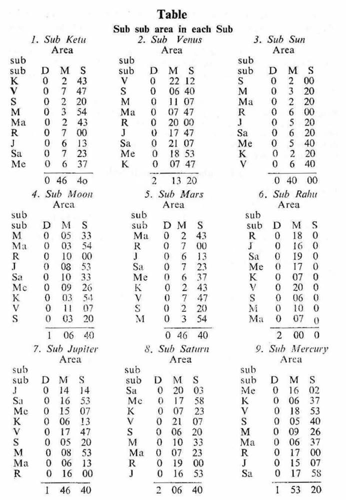
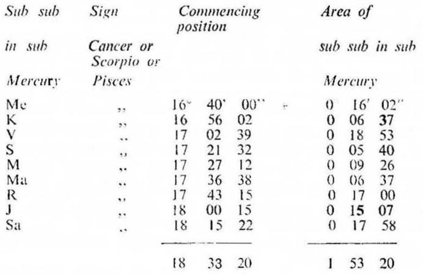

1. Formula of Sub sub
(a) Each ‘sub’ is further divided into nine parts. This sub division is termed as ‘sub sub’. It is based on the following formula:–
“Dasha years of each planet ÷ the total number of Vimshottari dasha years × Each sub area = The longitude or extent or area of ‘Sub sub’ for each planet in each ‘Sub’.”
(b) The above formula of deriving ‘Sub sub’ in each ‘Sub’ is illustrated as under:–
1. The sub area of Ketu is 0°46′ 40″=140′/3. In sub Ketu
Area of sub sub Ketu 7/120 × 140′/3 = 0° 2′ 43″
Area of sub sub Venus 20/120 × 140/3 = 0° 7′ 47″ and so on.
2. The sub area of Sun is 0°40′ 0″ = 40′. In sub Sun
Area of sub sub Sun 6/120 × 40/1 = 0° 2′ 0″
Area of sub sub Jupiter 16/120 × 40/1 = 0° 5′ 20″ and so on,
3. The sub area Rahu is 2° 0′ 0″ = 120′. In sub Rahu
Area of sub sub Saturn 10/120 × 120/1 = 0′ 19′ 0″
Area of sub sub Mercury 17/120 × 120/1 = 0° 17′ 0″ and so on.
4. The sub area of Saturn is 2° 6′ 40″=380/3′. In sub Saturn
Area of sub sub Venus 20/120 × 380/3 = 0° 21′ 7″
Area of sub sub Moon 10/120 × 380/3 = 0° 10′ 33″ and so on.
Obtain the area of ‘Sub sub’ for all planets in each ‘sub’ in this way. A table showing ‘Sub sub area’ in each ‘sub area’ is given here under:

In the Chapter 2. ‘Sub in Nakshatra system’ the tables of subs are given. So refer to the table D on page 9, you will find that Mercury star area extends from 16° 40′ to 30° 0′ in Cancer or Scorpio or Pisces; and in the star of Mercury the sub of Mercury commences from 16° 40′ and it extends upto 18° 33′ 20″.
Now the longitudes of Sub sub for all planets in the sub Mercury in the star Mercury are explained below:
|
|
Sign |
Area |
|
Star–Mercury |
Cancer or Scorpio or Pisces |
16° 40′ 00″ to 30° 00′ 00″ |
|
Sub–Mercury |
,, ,, ,, |
16° 40′ 00″ to 18° 33′ 20 |
In the sub area of Mercury in Cancer or Scorpio or Pisces the Sub sub of Mercury commences from 16° 40′ 00″, add 0° 16′ 02″ (sub sub area of Mercury) and you will get the commencing position of the Sub sub of Mercury at 16° 56′ 02″. Repeat this procedure and the commencing position of the Sub sub for all planets in the Sub of Mercury in the star of Mercury in Cancer or Scorpio or Pisces will be obtained thus,

From the above table it will appear that the Subsub of Mercury commences at 16° 40′ 00″ and ends at 16° 56′ 02″. The Subsub of Ketu begins at 16° 56′ 02″ and extends upto 17° 02′ 39″ and so on.
Now prepare a detailed table for the longitudes of Subsub for all planets in all nine Subs in each Star for all nine Star lords in this manner.